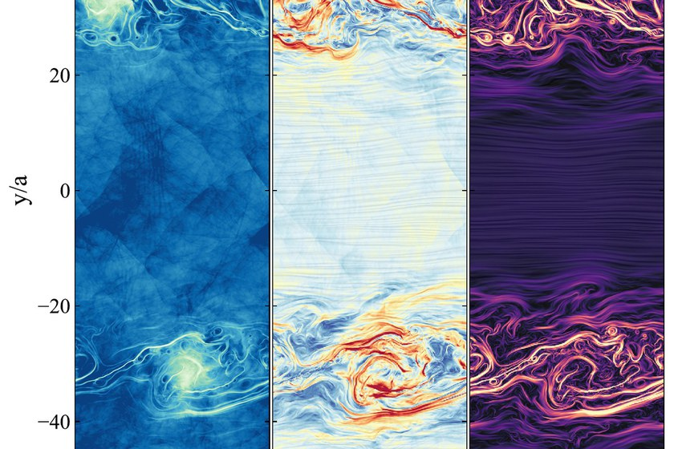

Particle Acceleration in Magnetized Shear-Driven Turbulence
The Astrophysical Journal accepted, 2026
MHD-PIC simulations of particle acceleration in sustained, subsonic, non-relativistic magnetized turbulence driven purely by velocity shear, with full particle backreaction. Acceleration continues only while the turbulence is driven. The mechanism is the systematic distortion of gyro-orbits by turbulent electric fields, and the mean energy gain scales quadratically with shear velocity.